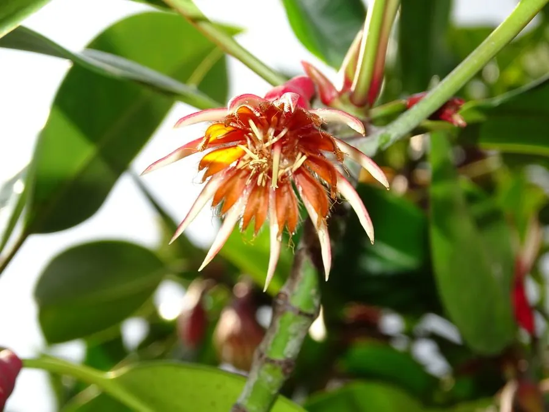

水生植物 · 植物界
木榄 Bruguiera gymnorrhiza

红树科木榄属常绿乔木，红树林中高大的树种，具膝状呼吸根和胎生苗，分布于热带海岸，是护岸固滩的重要植物。
- 分类
- 门被子植物门纲木兰纲目金虎尾目科红树科属木榄属
- 栖息环境
- 热带、亚热带海岸潮间带泥滩，耐盐、耐淹
- 地理分布
- 非洲东部、亚洲南部至澳大利亚北部，中国华南沿海
- 保护级别
- 暂无评估
物种志
木榄为红树科木榄属的常绿乔木，高可达 10–15 米，树皮灰黑色，基部有板状根和膝状呼吸根伸出泥面。叶片对生，革质，椭圆形，长 8–15 厘米，表面深绿色，背面淡绿色。花单生，萼片红色、花瓣白色，花期春季；果实为圆锥状，种子在果实内萌发，形成细长的胎生苗。
木榄广泛分布于非洲东部、亚洲南部至澳大利亚北部的红树林中，中国海南、广东、广西、福建等地有分布，喜温暖、盐渍和潮间带淤泥环境，耐盐、耐淹。它是红树林中较高大的树种，木材坚硬，可作建筑和家具用材；树皮含鞣质，可提取栲胶。木榄的胎生苗和呼吸根是适应潮间带环境的重要结构，对护岸固滩和维持生物多样性具有重要价值。
形态与习性
- 株高可达 10–15 米
- 叶片椭圆形，革质，对生
- 花期春季，萼片红色、花瓣白色
- 根系具板状根和膝状呼吸根
- 胎生种子在果实内萌发成胎生苗
- 耐盐耐盐、耐淹，生于潮间带
- 主要用途木材、栲胶原料
- 生态护岸固滩、维持生物多样性
趣味知识
- 木榄的种子在果实内萌发，长出细长的胎生苗，落到泥中即可扎根。
- 它的膝状呼吸根从泥中伸出，帮助在缺氧环境中呼吸。
- 木榄是红树林中较高大的树种，木材坚硬，可作建筑用材。